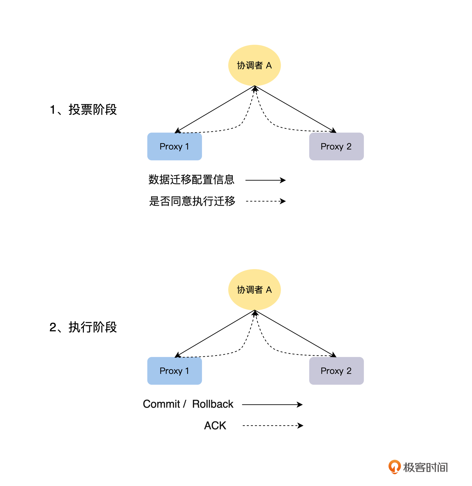

- 00 开篇词 掌握好学习路径，分布式系统原来如此简单.md.html
- 01 导读：以前因后果为脉络，串起网状知识体系.md.html
- 02 新的挑战：分布式系统是银弹吗？我看未必！.md.html
- 03 CAP 理论：分布式场景下我们真的只能三选二吗？.md.html
- 04 注册发现： AP 系统和 CP 系统哪个更合适？.md.html
- 05 负载均衡：从状态的角度重新思考负载均衡.md.html
- 06 配置中心：如何确保配置的强一致性呢？.md.html
- 07 分布式锁：所有的分布式锁都是错误的？.md.html
- 08 重试幂等：让程序 Exactly-once 很难吗？.md.html
- 09 雪崩（一）：熔断，让故障自适应地恢复.md.html
- 10 雪崩（二）：限流，抛弃超过设计容量的请求.md.html
- 11 雪崩（三）：降级，无奈的丢车保帅之举.md.html
- 12 雪崩（四）：扩容，没有用钱解决不了的问题.md.html
- 13 可观测性（一）：如何监控一个复杂的分布式系统？.md.html
- 14 可观测性（二）：如何设计一个高效的告警系统？.md.html
- 15 故障（一）：预案管理竟然能让被动故障自动恢复？.md.html
- 16 故障（二）：变更管理，解决主动故障的高效思维方式.md.html
- 17 分片（一）：如何选择最适合的水平分片方式？.md.html
- 18 分片（二）：垂直分片和混合分片的 trade-off.md.html
- 19 复制（一）：主从复制从副本的数据可以读吗？.md.html
- 20 复制（二）：多主复制的多主副本同时修改了怎么办？.md.html
- 21 复制（三）：最早的数据复制方式竟然是无主复制？.md.html
- 22 事务（一）：一致性，事务的集大成者.md.html
- 23 事务（二）：原子性，对应用层提供的完美抽象.md.html
- 24 事务（三）：隔离性，正确与性能之间权衡的艺术.md.html
- 25 事务（四）：持久性，吃一碗粉就付一碗粉的钱.md.html
- 26 一致性与共识（一）：数据一致性都有哪些级别？.md.html
- 27 一致性与共识（二）：它们是鸡生蛋还是蛋生鸡？.md.html
- 28 一致性与共识（三）：共识与事务之间道不明的关系.md.html
- 29 分布式计算技术的发展史：从单进程服务到 Service Mesh.md.html
- 30 分布式存储技术的发展史：从 ACID 到 NewSQL.md.html
- 春节加餐 技术债如房贷，是否借贷怎样取舍？.md.html
- 春节加餐 深入聊一聊计算机系统的时间.md.html
- 春节加餐 系统性思维，高效学习和工作的利器.md.html
- 结束语 在分布式技术的大潮流中自由冲浪吧！.md.html
- 捐赠
06 配置中心：如何确保配置的强一致性呢？
你好，我是陈现麟。
通过学习“负载均衡”的内容，你知道了怎么评价一个负载均衡策略，以及针对不同的业务场景，应该怎么选择合适的负载均衡策略。现在，你已经能够顺利地解决分布式系统中，服务实例的选择问题，恭喜你又前进了一大步。
但是，随着极客时间分布式架构的逐渐演进，之前的单体服务慢慢被拆分为越来越多的服务，虽然拆分后的架构对公司研发的成本、效率和稳定性方面有着非常大的改进，可是你在系统运维的时候，特别是管理系统配置的时候，却发现效率越来越低了，并且还经常会出现因为配置问题导致的故障。
可能你很快就能想到这个问题产生的原因，因为在目前的分布式架构迭代过程中，极客时间的后端系统由之前单体架构的一个服务，被拆分成了多个服务，并且服务的数量还在继续增加。我们管理 1 个服务的配置是很轻松的，但是用管理 1 个服务配置的方法，来管理 10 个、20个甚至更多的服务配置，效率一定是非常低的，并且也避免不了出错。
虽然能想到原因，但是真正处理时，却不知道怎么做，你是不是也有这样的疑问呢？不要担心，在这节课中，我将和你一起来讨论在分布式系统中，我们应该怎么管理服务配置信息？
我们从分布式场景下，手动管理配置的问题出发，思考为什么需要配置中心，然后进一步讨论配置中心需要具备的功能，接着从存储系统的选择，配置信息的同步这两个方面，来结合业务场景实际讨论，解决如何实现配置中心的问题，最后再探讨一下，需要配置同时生效的场景下，如何确保配置信息的强一致性。
为什么需要配置中心
在思考配置问题之前，我们先讨论一下单体服务架构是怎么管理配置的，如果直接使用单体服务的方式来处理分布式系统的配置，将会出现什么样的问题，从而引出解决配置管理问题的高效方法——配置中心。
单体服务架构的场景下，一般是将配置信息视为代码的一部分，工程师会像编辑代码一样，编辑好配置，然后通过发布系统，将配置发布到服务程序所在的机器上，接下来，程序会通过加载本地存储上的配置文件，使配置生效。在单体架构下，这个配置即代码的方法能够很好地运行，但是在分布式架构下则会出现以下几个问题。
首先，这种方法缺乏整体的配置管理平台，会使配置管理的效率变得很低。单体服务的架构只有一个服务，不需要用全局视角来管理配置，但是在分布式系统中，如果将配置信息视为代码的一部分，会导致不同服务的配置文件，出现在不同的代码仓库中。当我们需要检索和查看多个服务的配置时，需要在一个个代码仓库中查找，效率会非常低。
其次，这种方法会导致实例之间的配置出现不一致的情况。其实在单体架构下，也会有这个问题，不过整个单体系统只有一个服务，通过人工来保证实例之间配置一致是比较简单的。但是在分布式系统中，随着服务的增加，想要靠人工来保障是不可能的。
因为配置是随着程序一起发布的，每一个实例都会加载本地机器上存储的配置信息，如果配置文件有人为修改或其他故障时，会因为多实例之间的配置信息不相同，出现实例之间的行为不一致性的情况，进而出现各种奇怪的问题。
最后，配置即代码的方法会使配置修改的操作，变得非常冗余和低效，这个问题同样存在于单体架构中。由于每一次的配置修改，都需要走一次完整的代码发布流程，所以工程师都需要从服务的代码仓库中找到配置文件，在对配置文件进行修改后，提交修改到代码仓库，然后通过发布系统进行发布，最后程序会通过重启或者热更新的方式加载配置。其中，只有修改配置文件和发布配置文件这两个操作是必须的，其他的流程都和配置修改无关。
结合上面的分析你会发现，配置即代码的配置管理方式有非常多的问题，那么我们能不能直接手动管理配置呢？其实从操作上来说是可以的，比如你登录到每一台机器上手动修改，然后再让程序加载，重新配置文件即可。
但是这样一来，每一次服务的配置修改，都需要修改该服务的所有实例的配置，效率又低又容易出错。如果你的操作稍微有一点失误，就会导致同一个服务中，多个实例的配置信息直接不一致了。而且这样的操作，还会导致配置文件的修改没有历史记录，如果出现了当前配置文件错误的问题，需要回滚到上一个版本的时候，就麻烦了。
那么，到底怎么能更高效、更准确地解决分布式系统的配置管理问题呢？一般来说，在分布式系统中，如果一个问题的影响半径超出单一服务的范围，就可以考虑通过引入一个中间层的方法来解决，即“计算机科学领域的任何问题都可以通过增加一个间接的中间层来解决”这个经典论断。它会经常出现在我们的课程中，帮助你培养解决问题的高效思路。
所以，在解决分布式系统的配置管理问题时，我们也来引入一个中间层，把这个中间层称之为配置中心。引入配置中心这个高效的解决方法之后，我们可以进一步地讨论一个理想的配置中心应该是什么样子的，这样你就知道在建设配置中心时，我们需要注意什么样的关键点。
配置中心需要具备哪些功能
在解决问题之前，应该先定义好问题。所以我们在讨论配置中心的具体实现之前，先来定义一下，什么是配置中心，具体来说就是配置中心应该要具备哪些功能？
我们可以结合上文中，配置即代码的方法在分布式系统中面临的三个问题，推导出在分布式系统的架构下，一个理想的配置中心应该具备哪些特点。
首先，这个配置中心，能够统一管理分布式系统所有服务的配置信息。那么研发工程师就可以在配置中心上，便捷地全局搜索和查看每一个服务的配置信息，而不是看到所有服务的配置信息都散落在不同的地方。更进一步来说，配置中心需要能统一存储和管理整个分布式系统的所有配置文件。
其次，配置中心里，同一个服务实例之间的配置应该保持一致。也就是说，配置中心需要保证一个服务所有的实例，都加载同一份配置文件，而不是每一个实例维护一个配置文件的副本。这就需要配置中心统一去管理，服务当前版本的配置，并且服务的实例通过网络去配置中心，获得当前的配置信息，确保 Single Source of Truth ( SSOT )。
最后，这个配置中心应该能高效地修改配置。研发工程师只需要关心，并且高效地完成配置的修改、发布和回滚操作，而其他的就不需要研发工程师手动来操作了，比如配置文件的版本管理等，这些都由配置中心来自动完成。
经过前面的讨论，我们结合这节课开头提到的配置中心的业务场景，可以总结出配置中心需要解决的两个关键问题：
- 统一的配置存储：一个带版本管理的存储系统，按服务的维度，存储和管理整个分布式系统的配置信息，这样可以很方便地对服务的配置信息，进行搜索、查询和修改。
- 配置信息的同步：所有的实例，本地都不存储配置信息，实例能够从配置中心获得服务的配置信息，在配置修改后，能够及时将最新的配置，同步给服务的每一个实例。
那么到这里，你会发现配置中心和服务的注册发现机制是非常类似的，唯一不同的地方是服务注册发现所存储的服务实例的 IP 和 Port 等信息，是服务实例自己注册的，并且会设置过期时间，随着实例上线时主动写入，下线后会因为过期而被删除。但是配置中心的配置信息是研发工程师主动写入的，并且不会设置过期时间。
如何实现配置中心
我们确定了“统一的配置存储”和“配置的更新与同步”这两个关键问题，并且还发现了配置中心与服务的注册发现机制之间的相似性，掌握了这些信息，我们接下来就可以思考，如何实现配置中心的解决方法了。
关于如何实现配置中心，我们首先结合“统一的配置存储”这个关键点来分析，可以从“如何选择合适的存储系统”的角度来思考解决方法；然后再从“如何做配置信息的同步”的角度，讨论“配置的更新与同步”这个关键点。
如何选择合适的存储系统
与服务注册发现类似，实现配置中心也需要找一个外部存储，来做配置中心的统一存储。通过对配置中心的场景分析，我认为配置中心对存储系统的要求主要为以下几点：
- 可用性要求非常高：因为配置中心和服务注册发现一样，是整个分布式系统的基石，如果配置中心出现问题，整个分布式系统都将出现非常严重的问题。
- 性能要求中等：只要设计得当，整体的性能要求还是可控的，不过需要注意的是，性能要求会随分布式系统的实例数量变多而提高。
- 数据容量要求低：配置中心是用来存储服务的配置信息的，一般来说，服务的配置信息都非常小，如果出现非常大的配置，一般也不当成配置来处理，可以将它放到外部存储上，在配置中配置下载的链接。
- API 友好程度：是否能很好地支持配置中心场景的“发布/订阅”模式，将服务的配置信息及时同步给服务的实例。
基于上面对所需求存储系统特点的分析，我们一起来对常见的存储系统做一个系统性的比较，由于注册发现和配置中心类似，所以我们使用第 4 节课“注册发现”中的这张图片，从配置中心的角度进一步分析：
 -
通过上面的分析，我们可以看到，MySQL 和 Redis 在高可用性和 API 友好程度上不满足要求，而 etcd、ZooKeeper 和 Eureka 这三个存储系统中，更适合的是 Eureka。下面我们来讨论一下，为什么 Eureka 这样的 AP 系统要比 etcd 和 ZooKeeper 这样的 CP 系统更合适。
-
通过上面的分析，我们可以看到，MySQL 和 Redis 在高可用性和 API 友好程度上不满足要求，而 etcd、ZooKeeper 和 Eureka 这三个存储系统中，更适合的是 Eureka。下面我们来讨论一下，为什么 Eureka 这样的 AP 系统要比 etcd 和 ZooKeeper 这样的 CP 系统更合适。
如果我们选择 etcd 和 ZooKeeper，那么出现网络分区的时候，在网络分区的少数派节点一侧，配置中心将不能提供服务，这一侧的服务实例也就不能通过配置中心获取配置，这时如果有实例的重启等操作，就一定会发生故障。
如果选择 Eureka，那么配置中心这个整体，依然可以正常提供服务，唯一的问题是，如果这时有配置的更新，那么同一个服务中不同实例的配置可能会不一致，但是这个问题并不是最关键的，主要原因有两个。
首先，即使配置中心内部是强一致性的，但是配置中心和服务实例之间是通过网络同步配置的，而网络的时延是不确定的，这会导致配置信息同步到实例的时间有先有后，不能同时到达，使得配置中心和同一服务多实例之间的配置，同步退化到最终一致性。
其次，配置修改的频率是非常低的，而且因为是人工操作，所以在出现网络分区的时候，如果我们不去修改配置，那么 Eureka 上多个副本的数据就是一致的。
如何做配置信息的同步
讨论完“如何选择合适的存储系统”，我们接着讨论配置中心的另一个关键点“如何做配置信息的同步”，对于这个问题，我们可以将其分解为两个问题解决，具体操作如下图：- - 首先，实例刚启动的时候，主动去配置中心获取完整的配置信息，即首次同步：如上图中的 1，服务的每一个实例启动后，通过服务的唯一标识，去配置中心获取服务的所有配置，然后加载配置，完成实例的启动流程。
然后，在实例的运行过程中，如果服务的配置有修改，配置中心需要及时同步到实例，即变更同步：如上图中的 2 和 3，服务的配置信息有变更后，配置中心监听到服务的配置修改了，需要及时通知到服务的所有实例。这里可以采用“发布/订阅”的模式，也可以采用轮询模式，比如每 30 秒去配置中心查询一下，配置是否有变更。这里的数据同步是最终一致性的。
如何确保配置的强一致性
通过上面的讨论，我们知道了怎么来实现一个配置中心，并且知道了配置中心和服务实例之间的配置同步是最终一致性的。这时候你可能会有一个疑问，有没有一些业务场景必须要求，同一服务的多个实例之间的配置信息同时生效呢？如果有的话，应该怎么来保证呢？所以，我们最后来讨论一下，在需要配置同时生效的场景下，如何确保配置信息的强一致性。
确实有这样的场景，我们通过一个例子来分析一下。因为这部分只讨论配置强一致性的问题，所以这个数据迁移的例子，不会涉及整个数据迁移的完整流程。假设有一个分布式存储系统，如下图所示，我们现在需要通过配置信息，发送数据迁移指令，将数据集 2 从存储节点 1 迁移到节点 2 上。
在这个例子中，如果 Proxy 实例之间，对数据迁移的配置信息没有同时生效，将会导致什么样的异常情况呢？
从上图可以看出，在进行数据迁移前，Proxy 对数据集 2 的读写请求，都会路由到存储系统 1 上。我们通过配置中心，配置好数据迁移的配置后，如果 Proxy 1 已经加载了数据迁移的配置，Proxy 2 还没有接收到数据迁移的配置，那么在处理数据集 2 的请求时，就会出现 Proxy 1 读写存储节点 2，Proxy 2 读写存储节点 1 的情况，导致数据不一致的问题，反过来也是一样的。
那么我们应该怎么来解决这个问题呢？其实这是一个共识问题，需要所有的 Proxy 实例对数据迁移的配置达成共识后，才能进行迁移。而配置中心和多实例的配置同步，是通过网络来完成的，不是一个强一致性的模型，所以，我们不能简单依赖配置中心的配置同步来解决。
我们可以使用这样的解决思路，配置信息不能按上面讨论的方式直接通过网络进行同步，而需要通过类似两阶段提交的方式来解决这个问题。这里我们主要讨论处理这个问题的思路，不展开故障处理的情况，有了这个思路，后面你就可以处理多节点数据一致性和共识相关的问题了。
首先，从配置中心的存储节点中选择一个实例作为协调者 A。
在投票阶段，协调者 A 向所有的 Proxy 节点发送 Prepare 消息，即数据迁移的配置信息，Proxy 节点在收到数据迁移配置后，确认自己当前的状态是否可以执行数据迁移工作。如果可以，那么就阻塞当前节点所有的读写操作，进入 Prepare 状态，并回复协调者 A 同意执行数据迁移，否则回复不同意执行数据迁移。
那么这里要注意一点，为了数据的一致性，我们放弃了一定的可用性，Prepare 状态下的 Proxy 节点相当于被锁住，不能进行读写操作了。
在执行阶段，协调者 A 收集所有的 Proxy 节点的反馈，如果所有的 Proxy 都同意执行数据迁移，那么协调者 A 向所有的 Proxy 节点发送 Commit 消息，Proxy 节点收到 Commit 消息后，就应用数据迁移的配置信息，按最新的配置信息，接受读写请求，进行数据迁移。上文的例子，就是对于数据集 2 的读写请求，都路由到节点 2 来处理，否则就发送 Rollback 消息，Proxy 节点收到后，回滚状态，重新接受读写请求。- 
总结
到这里，我们一起完整地讨论了分布式系统中，一个非常关键的组件“配置中心”，我们一起来总结一下这节课的主要内容。
首先，我们一起讨论了为什么需要配置中心，主要有统一配置管理、同一个服务实例之间的配置一致性和配置修改效率这三个方面的原因。
然后，我们分析了一个理想的配置中心，应该具备什么功能，从中总结出配置中心的两个关键点：统一的配置存储和配置信息的同步。
接着，讨论了对于配置中心的业务场景来说，选择一个 AP 模型的存储系统是最优的方案，并且知道了应该如何做配置信息的同步。
最后，我们通过配置信息需要强一致性的例子，介绍了一个类似两阶段提交的方式，来实现强一致性的配置发布。
思考题
结合“如何处理强一致性的配置”的处理流程中的第二点：为了数据的一致性，放弃了可用性，Prepare 状态的 Proxy 节点相当于被锁住，不能进行读写操作。
请你思考一下，如果允许 Prepare 状态的 Proxy 节点读，会出现什么问题？如果允许 Prepare 状态的 Proxy 节点写，又会出现什么问题？
欢迎你在留言区发表你的看法。如果这节课对你有帮助，也推荐你分享给更多的同事、朋友。
© 2019 - 2023 Liangliang Lee. Powered by gin and hexo-theme-book.